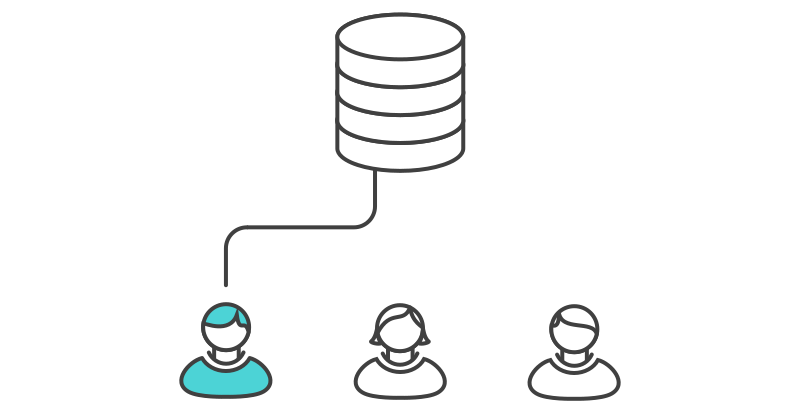

Centralized Workflow

Goals
- Centralized Workflow for One
- Centralized Workflow for Two
- Practicum w/ Git Extensions
Centralized Workflow for One
TODO
Centralized Workflow for Two
In a Centralized Workflow, there is a master repository, which everyone clones to his or her local system.

Centralized Workflow Example
Someone starts a new project and creates a master respository.

Everybody clones the central repository.

Andy develops a new feature.

Andy commits his work and pushes it to the central repository.
Carolyn pulls down Andy's changes and runs a new report.

Git Extensions Practicum
Next Time!
- How to deal with multiple developers!
All credits for the graphics go to Atlassian.
atlassian.com/git/tutorials/comparing-workflows